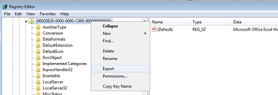
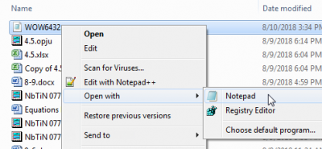
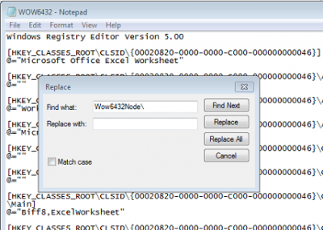
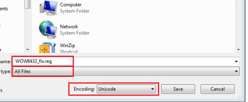

FAQ-508 Fehlerbehebung von Excel-Fehlern in Origin
Excel-Fail-Open
Letztes Update: 09.08.2018
Projekt mit interner Excel-Datei kann nicht geöffnet werden.
Beim Öffnen einer Datei, in der Excel-Tabellenblätter Teil der Daten sind, werden die folgenden Excel-Fehlermeldungen angezeigt:
"The application cannot be completed because the other program is busy. Use "switch to" to activate the other program and fix the problem."
oder
"Microsoft Excel is waiting for another application to complete an OLE action."
Die zweite Meldung kann auf die erste Meldung folgen.
- Öffnen Sie den Task Manager.
- Schließen Sie alle offenen Excel-Dateien, Excel-Prozesse und ausgeführten Excel-Anwendungen.
Das Problem sollte hierdurch behoben und Excel wieder einwandfrei in Origin verwendet werden können.
Internes Excel-Tabellenblatt kann nicht innerhalb von Origin erstellt werden.
Beim Auswählen von Datei: Neu: Excel im Hauptmenü eines 64-Bit Origin wird der folgende Fehler angezeigt:
"Origin is unable to detect a proper installation of Excel on your computer."
Dieser Fehler ist, soweit bekannt, bei Excel 2003 und 2007 aufgetreten. Um ihn zu beheben, testen Sie folgende ZWEI Workarounds:
- In Origin 2015 und höheren Versionen
- Klicken Sie mit der rechten Maustaste auf das Origin-Symbol und wählen Sie Als Administrator ausführen.
- Starten Sie jetzt Origin und wählen Sie Fenster: Skriptfenster, um das Skriptfenster zu öffnen.
- Kopieren und fügen Sie die folgende Gleichung ein: doc -OFFICE2003;
- Markieren Sie das Skript und drücken Sie Enter.
Das Problem sollte nicht länger auftreten.
- Vor Origin 2015
- Öffnen Sie das Startmenü und geben Sie Regedit in der Suchleiste ein.
- Der Registry Editor wird geöffnet.
- Öffnen Sie jetzt diesen Zweig: HKEY_CLASSES_ROOT\CLSID\{00020820-0000-0000-C000-000000000046
(Verwenden Sie Bearbeiten: Suchen für den letzten Schritt, wenn die manuelle Suche sich als schwierig erweist).
- Klicken Sie mit rechts auf diesen Zweig und wählen Sie Export. Exportieren Sie ihn als WOW6432.reg in einen geeigneten Ordner.

- Klicken Sie mit der rechten Maustaste und öffnen Sie die Datei mit Notepad.

- Suchen und ersetzen Sie "Wow6432Node\" mit " " (d.h., entfernen Sie dieses Wort durchgehend im gesamten Notepad-Dokument).

- Speichern Sie die Datei als WOW6432_fix.reg. Denken Sie daran, die Erweiterung zu ändern und die Datei im Unicode zu speichern.

- Öffnen Sie den Registry Editor erneut. Gehen Sie zu Datei: Import... und importieren Sie diese Datei.
Öffnen Sie die 64-Bit-Version von Origin wieder und klicken Sie auf die Schaltfläche Excel. Sie sollte nun einwandfrei funktionieren.
Es können nicht mehr als 65536 Werte aus Excel in Origin kopiert/eingefügt werden.
Das Kopieren und Einfügen von mehr als 65536 Zeilen führt dazu, dass nach der 65536. Zeile ein Schnitt stattfindet und keine Werte mehr eingefügt werden. Ein Workaround dafür besteht in Folgendem:
- Gehen Sie im Origin-Menü zu Fenster: Skriptfenster.
- Geben Sie im Skriptfenster Folgendes ein:
@XLP=0;
- Markieren Sie den Inhalt des Skriptfensters und drücken Sie Enter.
Dadurch sollte das Problem behoben sein, und Sie sollten mehr als 65536 Zeilen kopieren und einfügen können.
Schlüsselwörter:Excel, Fehler, Origin, Excel öffnen, Fehlerbehebung